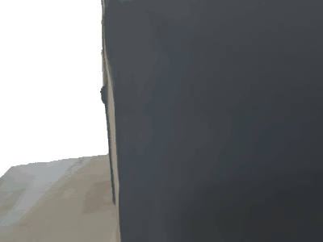

<!-- You must include this JavaScript file -->
<script src="https://assets.crowd.aws/crowd-html-elements.js"></script>

<script>
function run_this_function(){
  ok =false
  if (! ( document.getElementsByName("example1")[0].getAttribute("aria-checked")=="true" ||
          document.getElementsByName("example2")[0].getAttribute("aria-checked")=="true" )){
    errorBox.innerHTML = '<crowd-alert type="error" dismissible>You must select one of the provided examples.</crowd-alert>';
    errorBox.scrollIntoView();
  }
  else
    ok = true
return ok
}
</script>
<!-- For the full list of available Crowd HTML Elements and their input/output documentation,
      please refer to https://docs.aws.amazon.com/sagemaker/latest/dg/sms-ui-template-reference.html -->
  <style>
    .body {
      padding-top: 10px;
  	  /*padding-bottom: 20px;*/
      /*border:1px solid black;*/
      max-width: 1400px;
      justify-content: center;
      margin: auto;
  	}
    .guideline {
      max-width: 1400px;
      padding-top: 5px;
      padding-left: 20px;
      padding-right: 20px;
      padding-bottom: 10px;
      /*border:1px solid black;*/
  	}
    .detailed_guideline {
      float: right;
      background-color: lightyellow;
      border: 2px solid yellow;
      text-decoration-color: white;

  	}
  	.gif-container {
      display: flex;
      flex-wrap: nowrap;
      /*justify-content: center;*/
      margin: auto;
  	}
  	.left-container {
      margin-top: 20px;
      padding-left: 10px;
      padding-right: 20px;
      /*border:1px solid black;*/
  	}
  	.right-container {
      margin-top: 20px;
      padding-left: 20px;
      padding-right: 10px;
      /*border:1px solid black;*/
  	}
    .fancy-text{
      background-color: rgb(241, 250, 255);
      border: 2px solid rgb(0, 115, 187);
      font-weight: bold;
      width: 50%;
      padding: 5px;
      text-align: center;
      justify-content: center;
      margin: auto;
    }
    .submit-button{
      text-align: right;
      display:block;
      margin-right: 30px;
      margin-top: 30px;
      padding-bottom: 30px;
    }

    .gif-images{
        width: 45vw;
        max-width: 640px;
        min-width: 200px;
    }
  	#vertical-separator {
  	    border: solid 1px #d5dbdb;
  	}
    img {
        object-fit: cover;
    }
    #question {
        max-width: 780px;
  	    margin-top: 20px;
        margin-left: auto;
        margin-right: auto;
        text-align: center;
        padding-top: 5px;
        background-color: rgb(241, 255, 250);
        border: 2px solid rgb(0, 187, 115);
  	}

    @media all and (max-width: 980px) {
      .detailed_guideline {
        float: none;
      }
      .gif-container {
        padding-top: 20px;
        display: flex;
        flex-wrap: wrap;
        flex-direction: column;
      }
      .left-container {
        padding: initial;
        padding-bottom: 20px;
        margin: auto;
        text-align: center;
      }
      .right-container
      {
        padding: initial;
        margin: auto;
        text-align: center;
        padding-top: 20px;
      }
      .gif-images{
          width: 90vw;
          max-width: 640px;
          min-width: 200px;

      }
      /*#vertical-separator {*/
    	/*    border: solid 0px #000000;*/
    	/*}*/
    }


  </style>


<!-- You must include crowd-form so that your task submits answers to MTurk -->
<crowd-form answer-format="flatten-objects" onsubmit="return run_this_function()">
  <div id="errorBox"></div>
  <div class="body">


    <div class="guideline">
      <b>Guideline:</b> Two examples of human-scene interaction are presented in the next images.

      <span class="detailed_guideline">
      <crowd-instructions link-text="View detailed guideline" link-type="link">
        <short-summary>
          <p>
            Two examples of human-scene interaction are presented in the next images. Which example is more natural and physically plausible?
          </p>
        </short-summary>
        <detailed-instructions>
          <p>
            Imagine that you observe a pair of humans interacting with an environment like the one presented in the images.
            When observing both human interactions with the scene, you must decide which is more naturally and physically plausible.
            <br/>
            You can solve it by pondering the following support questions:
            <ul>
                <li><b>Is it affordable to interact with the environment in that way? </b><br>
                You should not use social biases like "Tables are not for humans to be sitting" or "He should not be standing up on the bed" or "The floor of a room is only for standing and walking, not for laying".
                </li>
                <li><b>Is this a possible situation?</b><br>
                When we perform actions in an environment, physical rules apply to such interaction; for example, we can not walk through a solid wall or be standing up at the ceiling of a room.
                </li>
            </ul>
          </p>
        </detailed-instructions>
        <positive-example>
		    Naturally and physically plausible examples
            <p>
<!--                -->
                

            </p>
		    <p>
                This interaction:
		    	<ul>
		    		<li>Show a human sitting on the environment correctly</li>
		    		<li>Interaction is physically possible and valid</li>
		    	</ul>
		    </p>
		  </positive-example>
		  <negative-example>
            NO physically plausible examples
            <p>
<!--                            -->
                

            </p>
            <p>
              This interaction:
		    	<ul>
		    		<li>Shows a human human interaction no physically plausible</li>
		    		<li>Not affordable interact with the environment this way </li>
		    	</ul>
            </p>
		  </negative-example>
      </crowd-instructions>
    </span>
    </div>


    <div class="gif-container">
       <div class="left-container">
         <div class="fancy-text">Example 1</div>
<!--         -->
         
       </div>
       <div id="vertical-separator"></div>
       <div class="right-container">
         <div class="fancy-text">Example 2</div>
<!--         -->
         
       </div>
    </div>

    <div id="question">
      <b>Which example is more natural and physically plausible?</b><br/>
      <crowd-radio-group>
        <crowd-radio-button name="example1">Example 1</crowd-radio-button>
        <crowd-radio-button name="example2">Example 2</crowd-radio-button>
      </crowd-radio-group>
    </div>

    <crowd-button form-action="submit" class="submit-button" variant="primary">
      Submit
      <iron-icon icon="icons:thumb-up"/>
    </crowd-button>
  </div>
</crowd-form>
